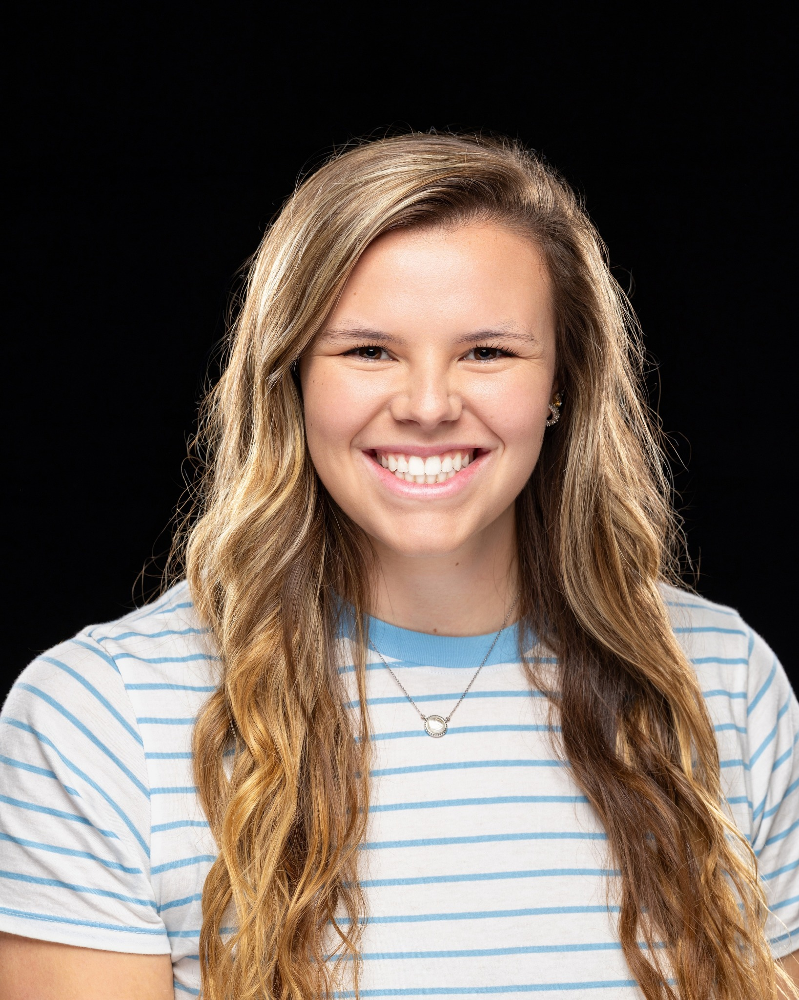

Ask. Listen. Tell.
Reporting, interviewing and writing stories that make information clear and meaningful.
Multimedia journalism · Sports media · Storytelling
I'm a multimedia journalism student with a passion for people, stories and the moments that bring communities together. I'm especially interested in sports media and digital storytelling.
I believe the best stories go beyond the headline or the final score. They help us understand the people behind them.

Lyndsey Cassell · Digital Media Portfolio
What I love to create
From athlete features to multimedia projects, I'm interested in content that feels thoughtful, engaging and true to the people at its center.
Reporting, interviewing and writing stories that make information clear and meaningful.
Exploring the personalities, preparation and experiences that make athletes more than a stat line.
Using social media and multimedia formats to help stories find and connect with their audiences.
A featured idea
A sports podcast concept focused on the person behind the player — sharing the stories, values and experiences fans don't always get to see.